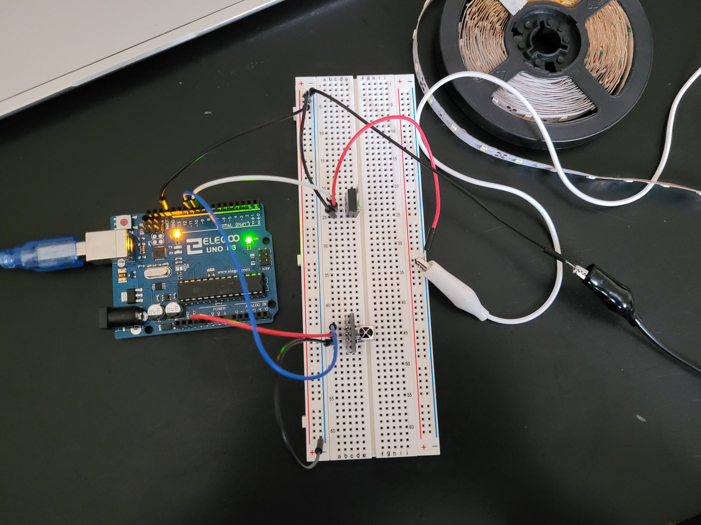
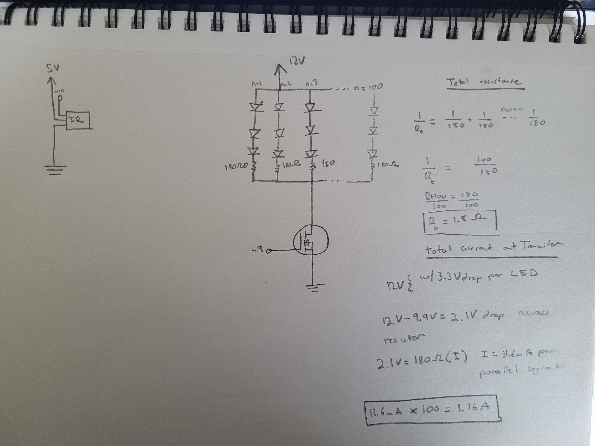

Shivank's Assignment 5!
For this assignment, I created a circuit that dims the LED strip based on input from the IR Remote! the numbers on the IR Remote correspond to stages in LEd brightness -- Zero being off and 9 being high.

Image of the circuit.

Image of the schematic and calculations. I did the calculations of the overall resistance of the LEd strip along with the calculations of the current going through the transistor. The data sheet of the transistor mentions a max current of 32A. In our circuit, we are drawing 1.16A. The calculation I did for the first resistance can be used to find the current as well. 2.1V / 1.8Ohms = 1.16A.
This is the code...
#include
int ledPin = 9; // define LED pin
int readPin = 10; // define IR input pin
#define IR_BUTTON_1 12 // maps the signal being read to a button
#define IR_BUTTON_2 24 // maps the signal being read to a button
#define IR_BUTTON_3 94 // maps the signal being read to a button
#define IR_BUTTON_4 8 // maps the signal being read to a button
#define IR_BUTTON_5 28 // maps the signal being read to a button
#define IR_BUTTON_6 90 // maps the signal being read to a button
#define IR_BUTTON_7 66 // maps the signal being read to a button
#define IR_BUTTON_8 82 // maps the signal being read to a button
#define IR_BUTTON_9 74 // maps the signal being read to a button
void setup() {
Serial.begin(9600); // starts Serial so we can read our results.
IrReceiver.begin(readPin); // initializes the IR pin.
}
void loop() {
if (IrReceiver.decode()) { // checks to see if we are receiving data
IrReceiver.resume(); // receive the next value
int command = IrReceiver.decodedIRData.command; // decodedIRData is the data structure that holds our information. .command reads the decoded command.
switch (command) { // reads the IR command and checks each case.
case IR_BUTTON_1: { // if the case matches with button 1...
Serial.println("Pressed on button 1"); // print out the button value on Serial.
analogWrite(ledPin, 28); // write to our pin -- 28 * the numeric value of the button
break;
}
case IR_BUTTON_2: { // if the case matches with button 2...
Serial.println("Pressed on button 2");// print out the button value on Serial.
analogWrite(ledPin, 2*28); // write to our pin -- 28 * the numeric value of the button
break;
}
case IR_BUTTON_3: { // if the case matches with button 3...
Serial.println("Pressed on button 3");// print out the button value on Serial.
analogWrite(ledPin, 3*28); // write to our pin -- 28 * the numeric value of the button
break;
}
case IR_BUTTON_4: { // if the case matches with button 4...
Serial.println("Pressed on button 4");// print out the button value on Serial.
analogWrite(ledPin, 4*28); // write to our pin -- 28 * the numeric value of the button
break;
}
case IR_BUTTON_5: { // if the case matches with button 5...
Serial.println("Pressed on button 5");// print out the button value on Serial.
analogWrite(ledPin, 5*28); // write to our pin -- 28 * the numeric value of the button
break;
}
case IR_BUTTON_6: { // if the case matches with button 6...
Serial.println("Pressed on button 6");// print out the button value on Serial.
analogWrite(ledPin, 6*28); // write to our pin -- 28 * the numeric value of the button
break;
}
case IR_BUTTON_7: { // if the case matches with button 7...
Serial.println("Pressed on button 7");// print out the button value on Serial.
analogWrite(ledPin, 7*28); // write to our pin -- 28 * the numeric value of the button
break;
}
case IR_BUTTON_8: { // if the case matches with button 8...
Serial.println("Pressed on button 8");// print out the button value on Serial.
analogWrite(ledPin, 8*28); // write to our pin -- 28 * the numeric value of the button
break;
}
case IR_BUTTON_9: { // if the case matches with button 9...
Serial.println("Pressed on button 9");// print out the button value on Serial.
analogWrite(ledPin, 9*28); // write to our pin -- 28 * the numeric value of the button
break;
}
default: { // if the case matches with unkown value...
Serial.println("Button not recognized"); // print out the button not recognized.
analogWrite(ledPin, 0); // write to our pin -- 28 * the numeric value of the button
}
}
}
}
This is the circuit in practice!!